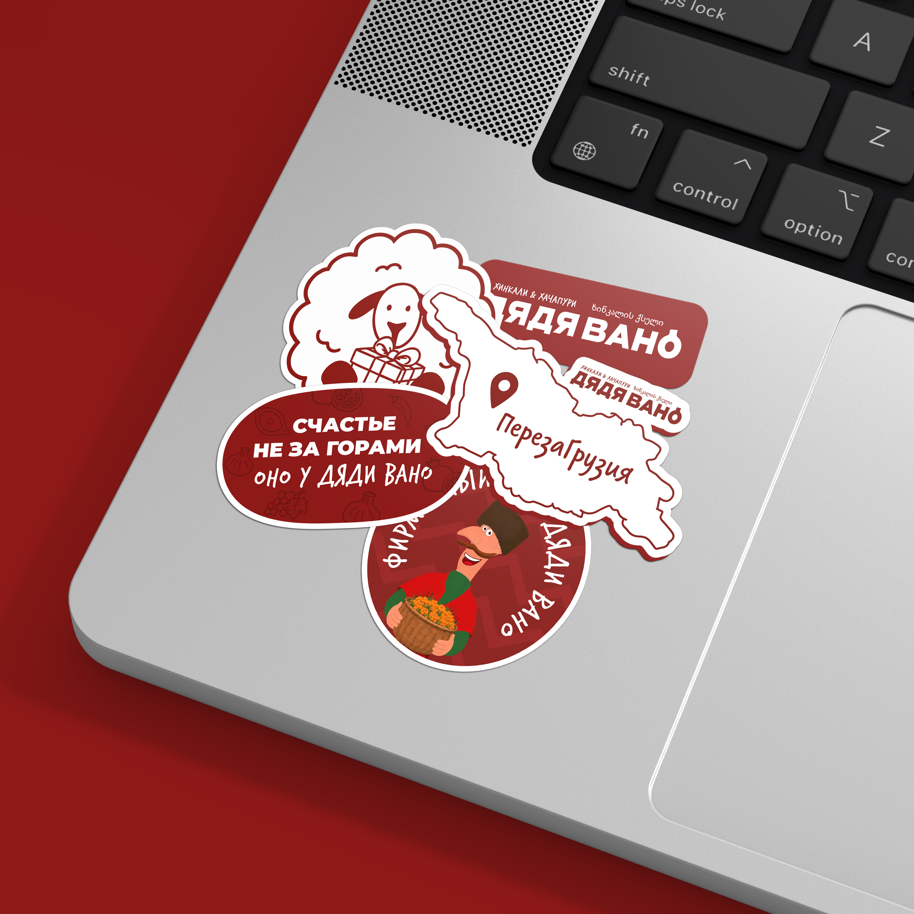
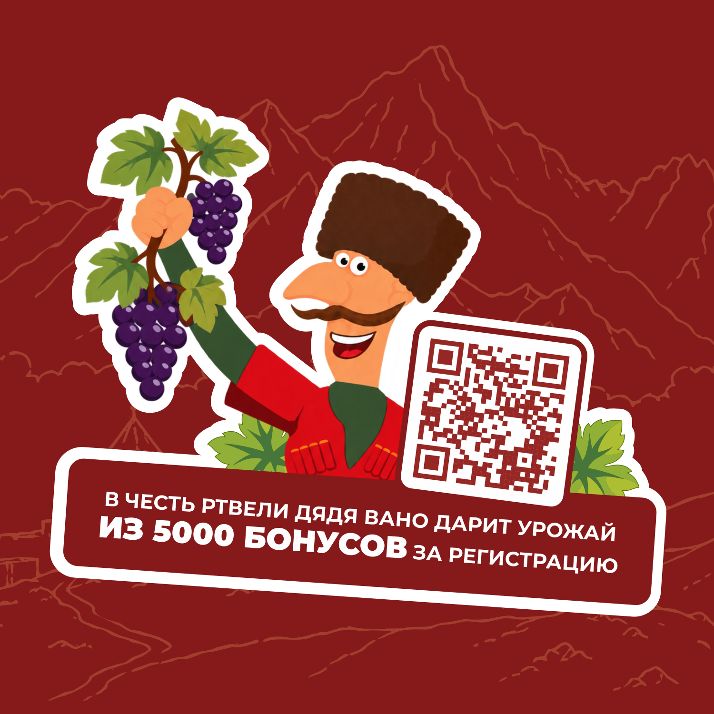
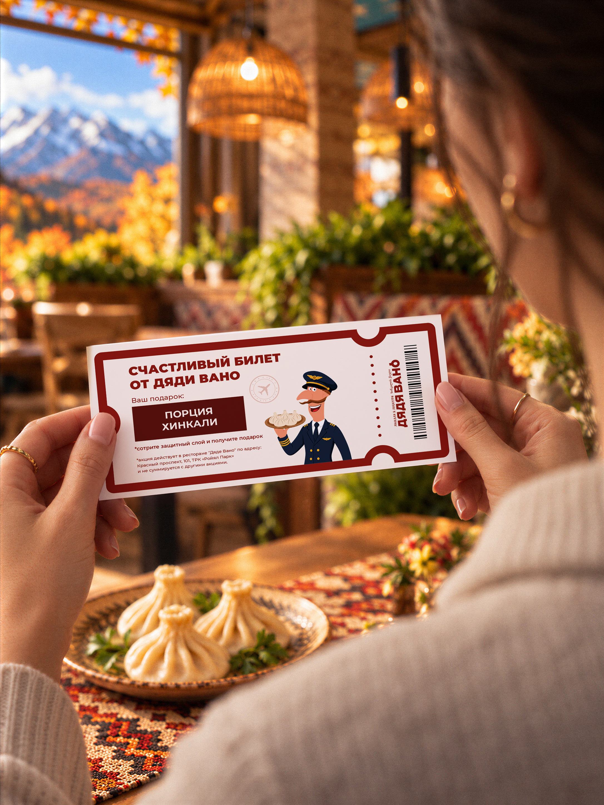
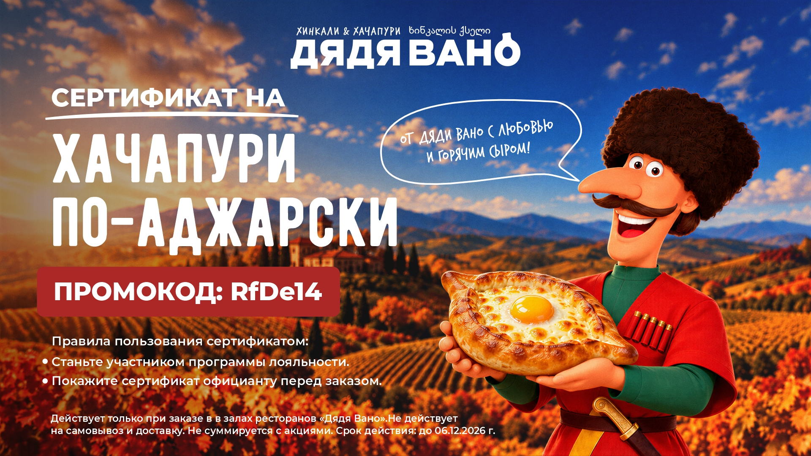
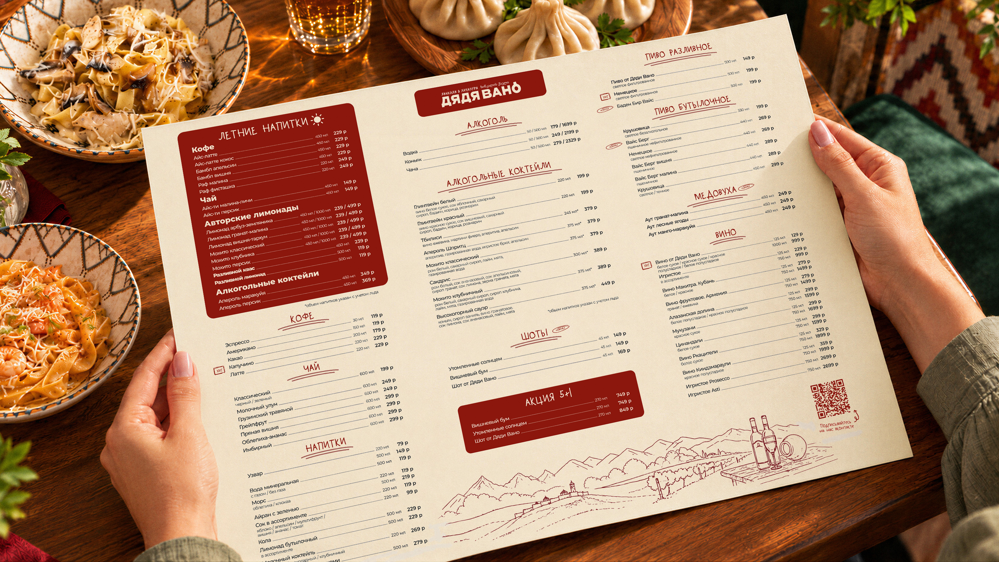

Дядя Вано
«Дядя Вано» — сеть ресторанов грузинской кухни, для которой была проведена работа по развитию существующей айдентики, обновлению визуальных элементов и созданию единого подхода к оформлению рекламных материалов.
Бренд уже обладал узнаваемым характером и собственными визуальными элементами, однако в коммуникациях не хватало единства. Разные типографические и визуальные решения затрудняли создание единого образа. Отдельного внимания требовал маскот бренда — персонаж Вано. Его реалистичная стилистика и выражение лица не в полной мере передавали дружелюбную атмосферу грузинского гостеприимства.
Развитие визуального языка началось с обновления маскота. Изменения затронули мимику, взгляд и детали внешности персонажа. Более открытая улыбка и традиционная папаха сделали образ дружелюбнее, сохранив его характерные черты.
Для рекламных материалов была сформирована единая типографическая система. Крупные заголовки стали основой композиции, а рукописные грузинские акценты подчеркнули национальность бренда.
Фирменная графика получила развитие через декоративные плашки, паттерны и иллюстрации. Повторяющиеся композиционные принципы позволили объединить разные форматы коммуникации, сохраняя возможность создавать выразительные и разнообразные макеты.
Обновлённый визуальный язык был адаптирован для меню, наружной рекламы, социальных сетей, и сувенирной продукции.
.jpg)
Результатом работы стала сформированная визуальная система, которая сохраняет визуальный стиль “Дяди Вано” и позволяет его развивать в различных направлениях.
Единые принципы оформления применяются в рекламных материалах ресторанов двух городов, обеспечивая визуальную целостность коммуникаций — от небольших публикаций в социальных сетях до масштабной наружной рекламы. Развитие айдентики позволило сохранить индивидуальность бренда, а также сделало визуальный язык гибким и адаптивным под новые задачи.






